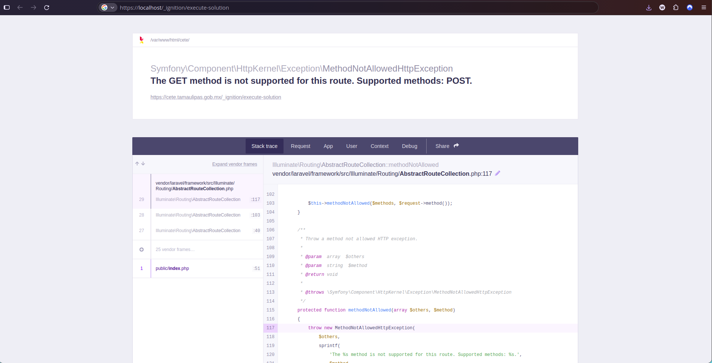

Menampilkan jenis exception dan ringkasan masalah, misalnya view tidak ditemukan atau variable tidak tersedia.
01 / Introduction
Apa Itu Laravel Ignition?
Laravel Ignition adalah halaman error dan debugging yang dirancang untuk membantu developer memahami exception pada aplikasi Laravel. Ia menyajikan pesan exception, stack trace, potongan kode, serta konteks request dan aplikasi dalam antarmuka yang lebih mudah dibaca.
Ignition pada dasarnya merupakan alat bantu debugging, bukan vulnerability dengan sendirinya. Keberadaannya pada aplikasi tidak otomatis berarti aplikasi rentan. Risiko muncul ketika detail internal yang seharusnya hanya tersedia bagi developer ikut ditampilkan kepada pengguna yang tidak berwenang, atau ketika versi dan konfigurasi komponen memiliki kelemahan keamanan tertentu.
Pembedaan utama: “Laravel Ignition” adalah nama komponen/halaman debugging. “Debug information disclosure” adalah kategori risiko ketika informasi internal terekspos. “CVE-2021-3129” adalah vulnerability spesifik pada versi dan kondisi tertentu. Ketiganya tidak boleh dianggap sebagai istilah yang sama.
02 / Purpose and Components
Fungsi Ignition dan Informasi yang Ditampilkan
Ketika aplikasi mengalami exception, Ignition membantu developer menemukan sumber masalah tanpa harus menelusuri log secara manual dari awal. Tampilan dan fitur dapat berbeda menurut generasi Ignition, versi Laravel, dan konfigurasi aplikasi.
Menunjukkan rangkaian pemanggilan fungsi yang berujung pada exception, termasuk frame aplikasi dan framework.
Dapat memperlihatkan file dan baris kode yang berkaitan dengan exception sehingga developer mengetahui lokasi masalah.
Bergantung versi dan konfigurasi, halaman dapat menyediakan informasi request, environment aplikasi, user context, atau aktivitas debug.
Dokumentasi pembuat Ignition menjelaskan bahwa halaman ini dirancang untuk memudahkan pembacaan application frames, view, request parameters, middleware, context, serta debug information. Tidak semua tab atau detail selalu tersedia di setiap versi. Lihat penjelasan awal Ignition dan pembahasan redesign Ignition.
03 / Debug Configuration
Hubungan Ignition dengan APP_DEBUG
Laravel memiliki konfigurasi debugging yang lazimnya dikendalikan melalui environment configuration, termasuk nilai APP_DEBUG. Saat debugging diaktifkan, aplikasi dapat menampilkan detail exception yang berguna selama pengembangan. Pada production, detail tersebut umumnya harus disembunyikan dari pengguna.
| Konfigurasi / kondisi | Perilaku umum | Catatan keamanan |
|---|---|---|
APP_DEBUG=true | Detail exception lebih lengkap dapat ditampilkan. | Berisiko membocorkan informasi internal jika halaman dapat diakses publik. |
APP_DEBUG=false | Detail exception untuk pengguna umumnya disederhanakan. | Periksa konfigurasi efektif dan pastikan error tetap dicatat secara aman di server-side log. |
| Debug page hanya di lingkungan lokal/staging terbatas | Developer dapat menggunakan detail diagnostik. | Akses lingkungan tersebut tetap harus dibatasi; staging yang dapat diakses publik juga perlu diamankan. |
Catatan: jangan mengandalkan nama environment seperti
APP_ENV=production saja. Periksa perilaku aktual, konfigurasi efektif, aksesibilitas halaman, dan apakah informasi sensitif benar-benar terpapar.04 / Web Server Misconfiguration
Document Root Mismatch: Domain vs IP Address
Selain konfigurasi Laravel seperti APP_DEBUG, ada lapisan lain yang perlu diperiksa: konfigurasi web server. Satu server dapat melayani domain dan IP address melalui VirtualHost atau server block yang berbeda. Domain utama mungkin diarahkan dengan benar ke direktori public/, sementara permintaan yang datang menggunakan IP address justru jatuh ke default VirtualHost dengan document root berbeda.
Penting: kondisi ini bukan vulnerability bawaan Laravel Ignition. Ini adalah web server misconfiguration yang dapat berdiri sendiri. Bagian ini diletakkan di halaman Ignition karena relevan dengan pola investigasi Laravel dan information disclosure, bukan karena Ignition yang menyebabkannya.
Contoh struktur project Laravel
/var/www/html/
|
+-- .env
+-- artisan
+-- composer.json
+-- composer.lock
+-- app/
+-- bootstrap/
+-- config/
+-- database/
+-- resources/
+-- routes/
+-- storage/
+-- vendor/
|
+-- public/
+-- index.php
+-- .htaccess
+-- css/
+-- js/
+-- images/
Pada deployment Laravel yang normal, web server seharusnya menyajikan aplikasi melalui direktori /var/www/html/public/, bukan project root /var/www/html/. File seperti .env, artisan, composer.json, dan direktori internal Laravel tidak dimaksudkan untuk menjadi konten web publik.
Contoh perbedaan pemetaan request
https://example.test/
VirtualHost yang cocok dengan domain mengarah ke /var/www/html/public/.
http://192.0.2.10/
Jika tidak ada host rule yang cocok, web server dapat memilih default VirtualHost yang mengarah ke /var/www/html/.
Permintaan IP dapat menyajikan project root, menolak request, melakukan redirect, atau menampilkan halaman default—bergantung konfigurasi aktual.
Tidak otomatis tereksposWeb server umumnya memilih konfigurasi berdasarkan alamat/port dan nilai HTTP Host (serta aturan TLS/SNI untuk HTTPS). Karena itu, domain dan IP yang menuju mesin yang sama belum tentu dilayani oleh konfigurasi VirtualHost yang sama. Jika tidak ada konfigurasi yang cocok, default server/site dapat menangani request tersebut.
Informasi yang mungkin terpapar
| Path / komponen | Potensi informasi | Batasan yang perlu diperiksa |
|---|---|---|
.env | Application key, database credential, mail credential, token, atau konfigurasi sensitif. | File dot dapat diblokir oleh aturan web server; akses langsung tidak boleh diasumsikan berhasil. |
composer.json / composer.lock | Nama package dan versi dependency. | Hanya terbaca jika server menyajikan file tersebut dan tidak ada aturan penolakan. |
artisan, routes/, config/, app/ | Struktur project, konfigurasi, atau source code. | PHP handler, access rules, dan konfigurasi server dapat mengubah hasil; source tidak selalu dikirim sebagai teks. |
storage/ | Dalam kondisi tertentu dapat berisi log, file hasil proses, atau data aplikasi. | Laravel biasanya hanya mengekspos file publik tertentu melalui public/storage symlink. Isi storage privat tidak otomatis tersedia. |
| Directory listing | Nama file dan direktori pada lokasi yang disajikan server. | Listing hanya muncul jika fitur autoindex/directory listing aktif dan tidak ada index file atau aturan yang mencegahnya. |
Mengapa domain yang benar belum tentu berarti IP juga aman?
Konfigurasi domain dapat memiliki VirtualHost khusus yang menetapkan document root ke public/. Namun, permintaan ke alamat IP dapat menggunakan default VirtualHost yang berbeda. Jika default tersebut menunjuk ke project root, maka permukaan paparan menjadi berbeda. Ini menjelaskan mengapa pemeriksaan konfigurasi tidak cukup hanya berdasarkan satu hostname.
WEB SERVER
|
+------------+------------+
| |
Request: DOMAIN Request: IP
example.test 192.0.2.10
| |
VirtualHost cocok Default VirtualHost
| |
/var/www/html/public/ /var/www/html/
| |
Laravel public entry Project root berpotensi
(index.php) tersaji sebagai web root
|
+-----------+-----------+
| | |
Ditolak File dapat Autoindex
/redirect terakses mungkin aktif
|
Sensitive disclosure
hanya jika akses terbuktiDiagram konseptual. Hasil sebenarnya bergantung pada web server, urutan VirtualHost, Host header, TLS/SNI, access rules, PHP handler, dan konfigurasi directory indexing.
Hal yang tidak boleh langsung disimpulkan
- Document root salah tidak otomatis membuat
.envdapat diunduh. Aturan deny untuk dotfiles atau file sensitif dapat tetap memblokirnya. - Directory listing tidak otomatis aktif. Web server dapat menolak listing atau menyajikan default index.
- Direktori
storage/tidak seluruhnya menjadi publik hanya karena ada folderpublic/storage. Symlink standar Laravel mengarah ke area file publik tertentu, bukan membuka semua storage privat. - Jika PHP dieksekusi oleh handler, file PHP mungkin diproses, bukan ditampilkan sebagai source. Namun file non-PHP, file konfigurasi, atau file yang salah ditangani tetap perlu dinilai sesuai respons aktual.
- Respons berbeda antara domain dan IP adalah petunjuk adanya perbedaan routing/VirtualHost, bukan bukti tunggal bahwa data sensitif bocor.
Hubungan dengan pola pikir ZeroHitman
Temuan ini memperlihatkan bahwa informasi awal tidak harus berasal dari bug pada aplikasi. Perbedaan perilaku antara domain dan IP dapat mengarahkan reviewer untuk mengidentifikasi default VirtualHost, membandingkan document root, lalu mengklasifikasikan apakah yang terbukti adalah konfigurasi yang keliru, source/configuration disclosure, directory listing, atau tidak ada paparan sama sekali.
Kesimpulan teknis: document root untuk aplikasi Laravel harus mengarah ke direktori
public/ pada setiap VirtualHost yang melayani aplikasi. Default VirtualHost juga harus dikonfigurasi secara aman—misalnya menolak host yang tidak dikenal atau menyajikan root publik yang benar—dan akses ke dotfiles, file konfigurasi, serta direktori privat harus diblokir secara eksplisit.05 / Visual Recognition
Mengenali Tampilan Laravel Ignition
Gambar berikut adalah ilustrasi antarmuka yang dibuat untuk materi ini. Gambar tersebut bukan screenshot dari server korban, bukan bukti vulnerability, dan tidak menunjukkan target nyata. Tujuannya membantu pembaca mengenali elemen umum pada halaman exception bergaya Ignition.

Bagian yang perlu dikenali
- Nama exception: membantu mengidentifikasi kategori kegagalan aplikasi.
- Pesan exception: menjelaskan kondisi yang memicu error.
- Path dan line number: dapat mengungkap struktur direktori atau lokasi source code.
- Stack trace: menunjukkan alur pemanggilan sampai exception terjadi.
- Source excerpt: dapat menampilkan potongan kode di sekitar baris yang bermasalah.
- Tab context: pada versi tertentu dapat memuat detail request, app, user, atau debug.
06 / Information Disclosure
Informasi Apa yang Berpotensi Terungkap?
Nilai security dari sebuah debug page bergantung pada informasi yang benar-benar terlihat dan konteks aksesnya. Tidak semua halaman Ignition menampilkan seluruh jenis data berikut.
| Jenis informasi | Contoh | Potensi nilai bagi reviewer |
|---|---|---|
| Path Disclosure | Lokasi file controller, view, vendor, atau root aplikasi. | Membantu memahami layout aplikasi dan lokasi komponen. |
| Source Code Context | Nama fungsi, potongan kode, pemanggilan method, atau nama variable. | Dapat memberi petunjuk untuk code review dan penelusuran data flow. |
| Framework / Dependency | Versi PHP, Laravel, package, atau komponen terkait jika ditampilkan. | Membantu verifikasi versi dan penentuan advisories yang relevan. |
| Request Information | Path, method, route, atau parameter request tertentu. | Mengungkap bagaimana aplikasi memproses request. |
| Application Context | Nama environment, konfigurasi non-secret, atau detail runtime. | Membantu memahami konfigurasi dan komponen aplikasi. |
| Sensitive Values | Token, credential, data pribadi, atau secret apabila benar-benar ikut dirender. | Dapat menjadi kebocoran serius; harus dibuktikan dan segera ditangani secara aman. |
Jangan menyatakan “APP_KEY bocor” atau “database password terekspos” hanya karena halaman Ignition terlihat. Klaim tersebut harus didukung bukti bahwa nilai tersebut benar-benar tampil, dapat diakses, dan bukan data dummy atau redacted.
07 / Reading the Evidence
Membaca Sinyal dari Halaman Error
Dalam pola pikir ZeroHitman, debug page diperlakukan sebagai sumber informasi awal. Pembaca dapat mengelompokkan temuan sebelum menentukan cabang investigasi yang relevan.
Framework Fingerprint
Nama class, namespace, path vendor, dan format exception dapat memberi petunjuk bahwa aplikasi menggunakan Laravel atau komponen terkait.
Application Structure
Path controller, middleware, route, dan view dapat membantu menyusun gambaran struktur aplikasi.
Configuration Clues
Detail environment atau runtime dapat menjadi petunjuk konfigurasi yang perlu diverifikasi melalui sumber yang diizinkan.
Version Clues
Versi package yang terlihat dapat dibandingkan dengan release notes dan security advisories. Banner versi saja belum tentu membuktikan package aktual yang berjalan.
08 / Important Distinction
Error Page Bukan Otomatis Vulnerability
| Kondisi | Interpretasi | Hal yang perlu diverifikasi |
|---|---|---|
| Halaman exception terlihat, tetapi hanya pesan umum | Error handling yang terlihat pengguna; belum tentu ada disclosure signifikan. | Apakah detail internal atau data sensitif ikut terlihat? |
| Stack trace dan absolute path terlihat | Berpotensi menjadi information disclosure. | Apakah halaman dapat diakses tanpa autentikasi? Seberapa sensitif informasi yang ditampilkan? |
| Source snippet dan request context terlihat | Informasi teknis tambahan mungkin terekspos. | Apakah data tersebut membuka detail yang tidak seharusnya publik? |
| Versi Ignition lama teridentifikasi | Indikasi untuk pemeriksaan versi dan advisory, bukan bukti eksploitabilitas. | Versi package yang tepat, dependency aktual, konfigurasi debug, dan patch level. |
| Vulnerability spesifik pada Ignition terkonfirmasi | Temuan vulnerability komponen yang berbeda dari sekadar debug disclosure. | Seluruh prasyarat advisory dan bukti aman dalam scope pengujian. |
09 / Historical Vulnerability
CVE-2021-3129: Laravel Ignition RCE
Salah satu vulnerability yang dikenal pada komponen Ignition adalah CVE-2021-3129. NVD menjelaskan bahwa versi Ignition sebelum 2.5.2 memiliki penggunaan file_get_contents() dan file_put_contents() yang tidak aman. Kondisi eksploitabilitas yang disebutkan mencakup aplikasi dengan debug mode aktif dan Laravel sebelum 8.4.2.
CRITICAL · CVSS 9.8
Jangan menyamakan semua halaman Ignition dengan CVE-2021-3129. CVE ini adalah bug spesifik pada komponen dan rentang versi tertentu. Menemukan halaman Ignition atau melihat stack trace tidak membuktikan bahwa CVE tersebut ada.
Rentang versi yang dicatat advisory
GitHub Advisory Database mencatat rentang terdampak untuk package facade/ignition, termasuk versi sebelum 1.6.15, rentang 1.7.0 hingga sebelum 1.16.14, rentang 2.0.0 hingga sebelum 2.4.2, serta rentang 2.5.0 hingga sebelum 2.5.2. Versi perbaikan yang dicatat meliputi 1.6.15, 1.16.14, 2.4.2, dan 2.5.2.
Rentang versi tersebut khusus advisory package yang disebutkan. Jangan menerapkannya secara serampangan ke package atau generasi Ignition lain. Identifikasi package, versi, dependency tree, dan patch aktual terlebih dahulu.
Sumber primer: NIST NVD — CVE-2021-3129 dan GitHub Security Advisory — GHSA-4qwp-7c67-jmcc.
Pelajaran dari CVE ini
- Komponen debugging dapat memiliki vulnerability tersendiri, terpisah dari fungsi utamanya sebagai error page.
- Konfigurasi debug dapat menjadi prasyarat penting pada kasus tertentu.
- Nama produk saja tidak cukup; versi dan kondisi konfigurasi menentukan relevansi advisory.
- Perbaikan harus mengacu pada versi patched dan arahan vendor, bukan sekadar menyembunyikan halaman error.
10 / Preconditions and Impact
Kondisi yang Menentukan Dampak
Penilaian harus memisahkan dua jalur risiko: debug information disclosure dan vulnerability pada komponen Ignition. Keduanya dapat muncul bersamaan, tetapi tidak identik.
Apakah debug page dapat diakses dari jaringan yang tidak dipercaya, atau hanya dari lingkungan internal yang dibatasi?
Apakah detail exception ditampilkan kepada pengguna, dan bagaimana konfigurasi efektif aplikasi?
Package Ignition apa yang digunakan dan apakah versinya termasuk rentang terdampak advisory tertentu?
Apakah seluruh prasyarat vulnerability spesifik terpenuhi? Hindari menyimpulkan dampak dari satu indikator.
Untuk information disclosure, dampak dapat berkisar dari pengungkapan path dan versi hingga kebocoran secret atau data sensitif, jika nilai tersebut benar-benar ditampilkan. Untuk CVE-2021-3129, advisory mengklasifikasikannya sebagai remote code execution pada kondisi yang dijelaskan oleh NVD.
11 / ZeroHitman Branching
Percabangan Investigasi Laravel Ignition
Bagian ini merupakan peta analisis konseptual. Setiap cabang adalah arah pemeriksaan yang mungkin relevan berdasarkan bukti, bukan urutan wajib dan bukan klaim bahwa satu temuan otomatis menghasilkan temuan lain.
LARAVEL IGNITION / DEBUG EXCEPTION
|
+-- 1. EXCEPTION INFORMATION
| +-- Exception class and message
| +-- Framework / package fingerprint
| +-- Error context
|
+-- 2. STACK TRACE AND SOURCE CONTEXT
| +-- Application file path
| +-- Controller / middleware / route clues
| +-- Source snippet and line reference
|
+-- 3. REQUEST AND APPLICATION CONTEXT
| +-- HTTP method and route
| +-- Request metadata (if rendered)
| +-- Environment / runtime details (if rendered)
|
+-- 4. SENSITIVE INFORMATION DISCLOSURE
| +-- Credential or token (only if visibly exposed)
| +-- Personal or business data (if present)
| +-- Configuration values (classify sensitivity)
|
+-- 5. COMPONENT VERSION REVIEW
| +-- Identify exact Ignition package
| +-- Verify installed version and dependency tree
| +-- Compare with relevant security advisories
|
+-- 6. SPECIFIC COMPONENT VULNERABILITY
+-- Verify CVE applicability and prerequisites
+-- Confirm patch status
+-- Assess impact within authorized scope
Peta ini sengaja memisahkan “informasi yang terlihat” dari “vulnerability komponen”. Stack trace disclosure dapat menjadi temuan tersendiri walaupun tidak ada CVE pada Ignition yang terpasang.
12 / Cross-Technique Relationships
Hubungan dengan Teknik Lain
| Temuan dari Ignition | Halaman terkait | Hubungan konseptual |
|---|---|---|
| Source path, controller, route, atau code snippet | Source Leak | Informasi dapat memberi petunjuk untuk code review; source leak dan debug disclosure tetap dua sumber temuan berbeda. |
| Path atau nama file internal | Local File Inclusion | Path dapat menjadi konteks untuk memahami struktur file. Path disclosure tidak otomatis berarti file dapat dibaca melalui LFI. |
| Database exception atau query context | SQL Injection | Error database dapat menjadi petunjuk untuk meninjau query handling. Exception saja bukan bukti SQLi. |
| Debug page pada endpoint logout | Laravel Logout Leak | Logout Leak adalah istilah deskriptif ZeroHitman untuk pola error disclosure pada konteks logout; dapat menggunakan halaman exception Laravel sebagai sumber informasi. |
Relasi di atas bersifat kontekstual. Sebuah petunjuk hanya membuka pertanyaan investigasi; hubungan harus diuji berdasarkan bukti dan kontrol akses yang berlaku.
13 / Assessment Method
Cara Menilai Temuan Ignition
- Catat konteks: URL/route yang diuji, waktu, status autentikasi, dan kondisi pengujian yang diizinkan.
- Identifikasi komponen: pastikan apakah halaman benar-benar Ignition dan, jika dapat diverifikasi, package serta versinya.
- Klasifikasikan informasi: pisahkan path, source context, version, request data, dan secret.
- Uji keterpaparan: tentukan apakah informasi terlihat oleh role yang tidak semestinya, tanpa mengakses atau menyebarkan data yang tidak diperlukan.
- Periksa advisory: cocokkan package dan versi dengan advisory yang relevan, lalu verifikasi patch.
- Nilai dampak: jelaskan apa yang benar-benar terbukti, apa yang hanya kemungkinan, dan prasyarat yang belum diketahui.
- Dokumentasikan dengan aman: redaksi secret, token, data pribadi, serta informasi internal pada screenshot dan laporan.
Prinsip laporan: tuliskan bukti aktual dan batasan pengujian. Jangan mengklaim RCE hanya karena menemukan Ignition, debug mode, atau versi yang tampak lama.
14 / Mitigation
Mitigasi dan Pencegahan
- Matikan debug mode pada production dan pastikan konfigurasi efektif sesuai rekomendasi Laravel.
- Gunakan error handling yang menampilkan pesan umum kepada pengguna, sementara detail diagnostik disimpan pada log server yang aksesnya dibatasi.
- Perbarui Laravel dan package Ignition ke versi yang masih didukung serta sudah menerima security fixes.
- Audit dependency menggunakan Composer lockfile dan proses dependency review.
- Batasi akses ke staging, panel debug, log, dan error-sharing service.
- Jangan memasukkan secret, token, password, atau data pribadi ke dalam exception message maupun debug context.
- Jika secret terlanjur terekspos, lakukan rotation/revocation dan evaluasi akses yang mungkin telah terjadi.
- Pastikan screenshot, ticket, dan laporan tidak menyebarkan nilai sensitif.
Rujukan konfigurasi: Laravel Error Handling Documentation dan Ignition Documentation.
15 / ZeroHitman Summary
Kesimpulan
Laravel Ignition sebaiknya dipahami sebagai alat debugging yang dapat menjadi sumber informasi ketika detail exception terekspos. Nilai investigasinya terletak pada informasi yang benar-benar tersedia: exception, stack trace, path, source context, request, environment, dan versi komponen.
Namun, pembaca harus membedakan tiga hal: halaman error, information disclosure, dan vulnerability spesifik pada package. CVE-2021-3129 adalah contoh vulnerability komponen yang memiliki prasyarat versi dan konfigurasi tersendiri; bukan konsekuensi otomatis dari setiap halaman Ignition.
ZeroHitman mindset: gunakan informasi yang ditemukan untuk membentuk hipotesis berikutnya. Klasifikasikan bukti, periksa kondisi, lalu hubungkan ke teknik lain hanya jika relasinya masuk akal dan dapat diverifikasi.
16 / References
Referensi
- NIST National Vulnerability Database — CVE-2021-3129
- GitHub Advisory Database — GHSA-4qwp-7c67-jmcc
- Facade Ignition — GitHub Repository
- Spatie Laravel Ignition — GitHub Repository
- Flare — Ignition Documentation
- Freek Van der Herten — Ignition: a new error page for Laravel
- Freek Van der Herten — Ignition redesign
- Laravel — Error Handling
- Laravel — Deployment (Web Server / Document Root)
Materi ini merupakan referensi edukasi dan dokumentasi keamanan. Pemeriksaan harus dilakukan hanya pada sistem yang dimiliki atau memiliki izin tertulis.